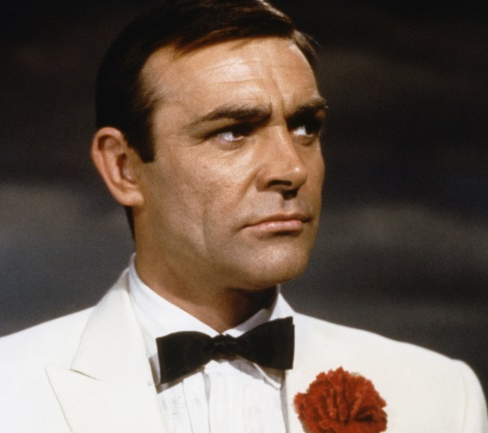
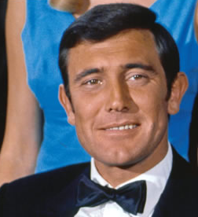
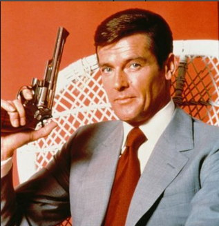
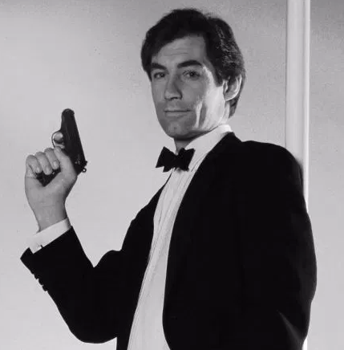
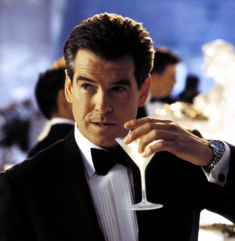
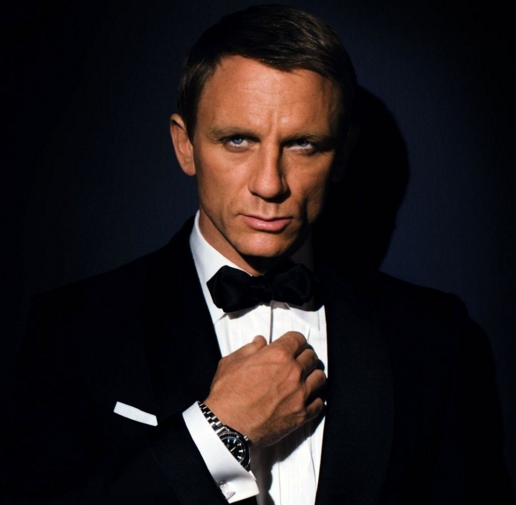
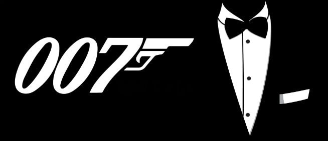
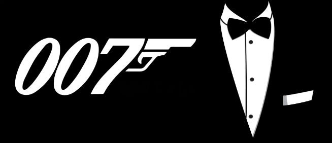

| Фото |
Имя |
Годы съёмок |
Фильмы |
|  |
Шон (Томас) Коннери |
1962 — 1971 |
- Доктор Ноу (1962)
- Из России с любовью (1963)
- Голдфингер (1964)
- Шаровая молния (1965)
- Живешь только дважды (1967)
- Бриллианты навсегда (1971)
|
|  |
Джордж Лэзенби |
1969 |
- На секретной службе Её Величества (1969)
|
|  |
Роджер Мур |
1973 — 1985 |
- Живи и дай умереть (1973)
- Человек с золотым пистолетом (1974)
- Шпион, который меня любил (1977)
- Лунный гонщик (1979)
- Только для твоих глаз(1981)
- Осьминожка (1983)
- Вид на убийство (1985)
|
|  |
Тимоти Далтон |
1987 — 1989 |
- Искры из глаз (1987)
- Лицензия на убийство (1989)
|
|  |
Пирс Брендан Броснан |
1995 — 2002 |
-
Золотой глаз (1995)
- Завтра не умрёт никогда (1997)
- И целого мира мало (1999)
- Умри, но не сейчас (2002)
|
|  |
Дэниел Крэйг |
2006 — 2015 |
- Казино «Рояль» (2006)
- Квант милосердия (2008)
- 007: Координаты «Скайфолл» (2012)
- 007: Спектр (2015)
|
 
